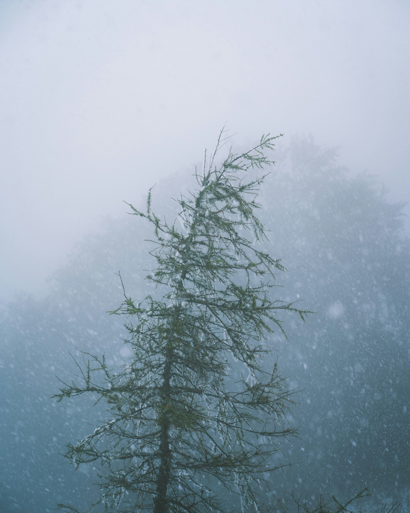
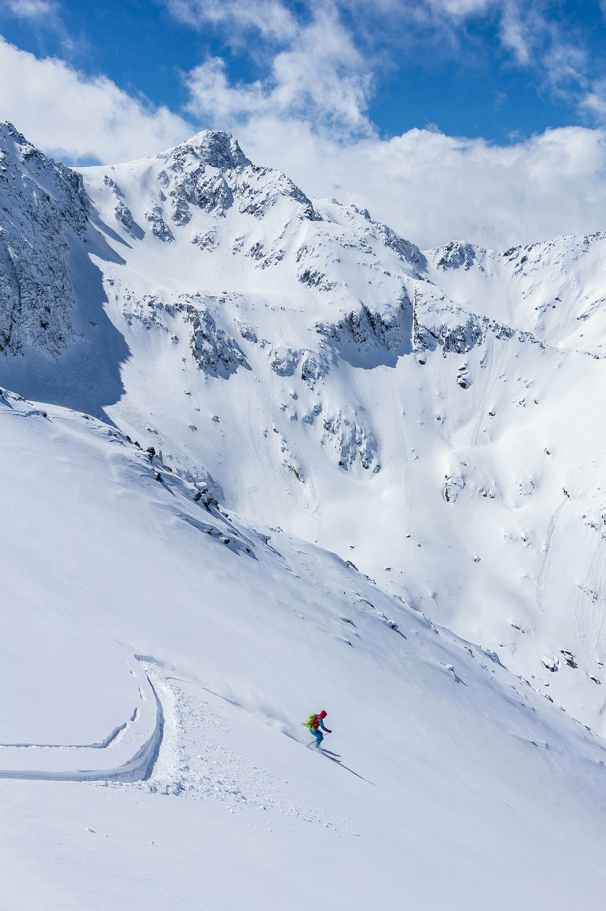
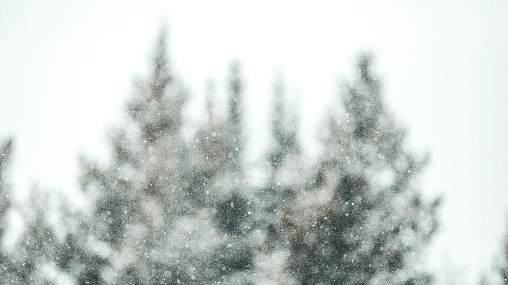
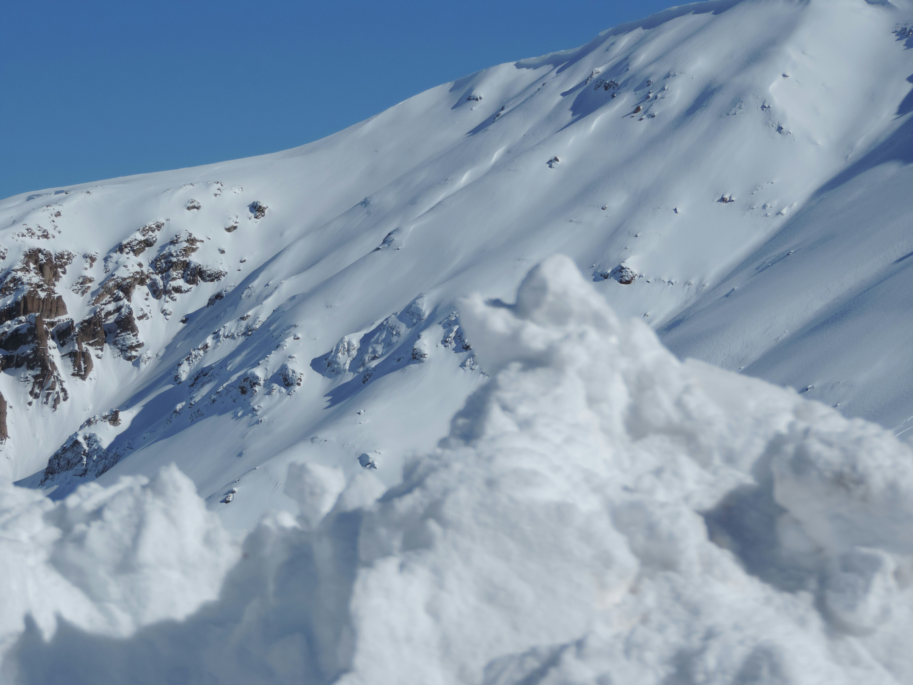

AVALANCHES
Avalanches occur as layers in a snowpack slide off. A snowpack is simply layers of snow that build up in an area, such as the side of a mountain. In winter, repeated snowfalls build a snowpack dozens of meters thick. The layers of a snowpack vary in thickness and texture. The bonds between the layers of a snowpack may be weak. Melted snow that refreezes may cause a slick coating of ice to form on the surface of a layer. A new snowfall may not stick to this slippery layer, and it may slide off. During spring thaw, melted snow can seep through a snowpack, making the surface of a lower layer slippery. Added weight or vibration can easily send the top layers of a snowpack hurtling downhill.
Types of Avalanches
Sluff
Sluff avalanches occur when the weak layer of a snowpack is on the top. A sluff is a small slide of dry, powdery snow that moves as a formless mass. Sluffs are much less dangerous than slab avalanches.
Slab
A slab avalanche occurs when the weak layer lies lower down in a snowpack. This layer is covered with other layers of compressed snow. When the avalanche is triggered, the weak layer breaks off, pulling all the layers on top of it down the slope. These layers tumble and fall in a giant block, or slab.

What Causes Avalanches?
Weather
Storminess, temperature, wind, the steepness of the slope, terrain, vegetation, and general snowpack conditions are all factors that influence whether an avalanche happens and what type occurs. Snow avalanches are most likely to occur after a fresh snowfall adds a new layer to a snowpack. If new snow piles up during a storm, the snowpack may become overloaded, setting off a slide.
Vibrations
Earthquakes can set off avalanches, but much smaller vibrations can trigger them as well. A single skier can cause enough vibrations to set off a slide. In fact, 90 percent of avalanche incidents involving people are triggered by the victim or someone in the victim's party.
HYPOTHERMIA
Hypothermia, or low body temperature, is a condition that occurs when your body's temperature drops below 35 degrees Celsius. The average normal body temperature is 37 C. Hypothermia is a medical emergency. When your body temperature is dangerously low, your brain and body can't function properly. Left untreated, hypothermia can lead to cardiac arrest (when your heart stops beating) and death.
Symptoms
Mild
Mild hypothermia means your body temperature is between 35 C and 32 C.
Signs
- Shivering and chattering teeth
- Exhaustion
- Clumsiness, slow movements and reactions
- Sleepiness
- Weak pulse
- Fast heart rate
- Rapid breathing
- Pale skin colour
- Confusion and poor judgment/loss of awareness
- Excessive urination
- Trouble speaking
Moderate
Moderate hypothermia means your body temperature is between 32 C and 28 C.
Signs
- Slow down in breathing and heart rate
- Slurred speech
- Decline in mental function
- Hallucinations
- Decreased shivering
- Bluish colour to skin
- Increased muscle stiffness
- Dilated pupils
- Abnormal heart rhythm
- Decreased blood pressure
- Weakened reflexes
- Loss of consciousness

Severe
Severe hypothermia means your body temperature is less than 28 C.
Signs
- Loss of shivering
- Low blood pressure
- Fluid in lungs
- Absence of reflexes
- Complete muscle stiffness
- Loss of voluntary motion
- Low urine output
- Heart stops beating
- Coma that may mimic death
- Death
What Causes Hypothermia?
Hypothermia occurs after exposure to cold, wet or windy conditions. When you're exposed to cold, your body expends energy to keep you warm. Eventually, with continued exposure to cold temperatures, your body uses up its stored energy and your body temperature begins to fall. You're not able to warm yourself back up. Symptoms will progress from mild to severe with prolonged exposure. While most cases of hypothermia occur at very cold temperatures, the condition can affect you even in cooler temperatures over 4.4 C if you become chilled from sweat, rain or submersion in cold water. Hypothermia occurs under environmental conditions (wet, cool/cold or windy) that cause a person's body to lose more heat than it generates.
How to Treat Hypothermia?
Hypothermia treatment includes the prevention of further heat loss and the process of rewarming. If you're with someone who has hypothermia, call for help and then take the following steps:
- Move the person to a warm, dry location
- Remove wet clothing and replace with dry clothing
- Cover them up with a jacket, hat and blanket
- Apply external heat to their skin, such as with a heat lamp or hot pack
When hypothermia is more severe, healthcare providers may also need to:
- Insert an IV into your vein and pump warm fluids into your body
- Give you warm oxygen through a mask or breathing tube
- Use a machine that warms your blood and pumps it back into your body
WHAT TO DO
An avalanche is one of the most powerful events in nature. A fractured mass of snow may flow down a slope or become airborne. As a large avalanche speeds down a mountainside, it may compress the air below it, producing a powerful wind that can blow a house apart, breaking windows, splintering doors, and tearing off the roof.
If Caught
If you are caught in an avalanche, the first thing to do is try to get off the slab. Skiers and snowboarders can head straight downhill to gather speed, and then veer sideways out of the slide path. Snowmobilers can punch the throttle to power out of harm's way. If this is not possible, reach for a tree. As a last resort, try to “swim” up out of the snow. The human body is three times denser than avalanche debris and will sink quickly. This makes finding and rescuing avalanche victims much more difficult.
If Buried
If buried in an avalanche, try to clear some space in front of you to breathe, then punch a hand skyward. Once the avalanche stops, it settles like concrete. Bodily movement is nearly impossible. Most avalanche victims are rescued, but those who aren't die of suffocation as the snow hardens and buries them.